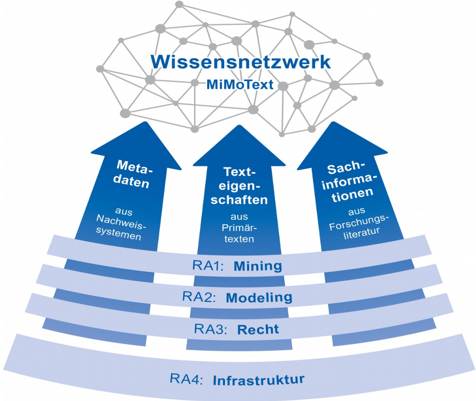

# Digital Humanities<br/>an der Universität Trier <br/> #### Professur für DH &<br/> Trier Center for Digital Humanities <br/> <hr/> <p><strong>Universität Trier, Oktober 2022</strong></p> <hr/> <img height="70" data-src="img/basics/uni-trier.png"> -- ## Der Standort im Überblick --- #### Zwei Einrichtungen, ein Team <small> * **Professur für Digital Humanities**: Prof. Dr. Christof Schöch, Silvia Carlitz, Dr. Élodie Ripoll, Ariadne Baresch, Julia Dudar * **Trier Center for Digital Humanities**: Prof. Dr. Claudine Moulin, Prof. Dr. Christof Schöch, Anja Hennemann, Dr. Thomas Burch, Dr. Claudia Bamberg, Dr. Joëlle Weis, Dr. Maria Hinzmann, Dr. Matthias Bremm, Keli Du, Tinghui Duan, Evgenia Fileva, Carolin Geib, Julia Hennemann, Anne Klee, Johanna Konstanciak, Michael Lambertz, Radoslav Petkov, Frank Queens, Julia Röttgermann, Henrike Sievers, Moritz Steffes, Sandra Weyand, zahlreiche WHK. </small> --- ### Partner vor Ort * Fachbereich II (Romanistik, Computerlinguistik, Medienwissenschaften) * Servicezentrum eSciences (Forschungsdatenmanagement) * Cultural Heritage Studies Trier (Kulturerbe) * Universitätsbibliothek Trier (Open Access) * Informatikwissenschaften (Text und Data Mining) * Institut für Recht und Digitalisierung Trier (Urheberrecht) * Stadtbibliothek Trier (Bestände) * uvm. --- ### Forschungsschwerpunkte * Digitale Edition * Digitale Lexikographie * Software-Systeme / Forschungsinfrastruktur * Digitale Kulturwissenschaft * Computational Literary Studies -- ## Digitale Edition :: - Literarische Texte sind die Grundlage der Literaturwissenschaft; - Wie kann man das digitale Medium nutzen, um sie ideal nutzbar zu machen? - Wie müssen die Daten strukturiert werden, damit eine funktionale Edition entstehen kann? --- #### Arthur Schnitzler-Edition <br/><small><a href="https://www.arthur-schnitzler.de/">arthur-schnitzler.de</a></small> :: - Moderner Autor, dessen Werk hier mit Partnern in England und Österreich ediert wird - extrem aufwändige Edition: exakte Textentstehung - stark interaktiv ausgelegt --- #### August-Wilhelm Schlegel: Korrespondenz <br/><small><a href="https://august-wilhelm-schlegel.de/briefedigital/">august-wilhelm-schlegel.de</a></small> :: - Edition der Korrespondenz - Gegenstand auch anderer Projekte -- ## Digitale Lexikographie :: - Nachschlagewerke sind ideal für das digitale Medium - Das Zentrum arbeitet seit seiner Gründung 1998 daran --- #### Wörterbuchnetz <img height="500" data-src="img/wörterbuchnetz2.png"> <br/><small><a href="https://woerterbuchnetz.de">woerterbuchnetz.de</a></small> :: - 30 Wörterbücher der deutschen Sprache - historische und Spezialwörterbücher - untereinander vernetzt: Suche über alles - mehrere Zehntausend Besucher pro Tag! --- #### ELEXIS :: - Digitale Lexikographie - Europäisches Infrastrukturprojekt und Netzwerk - Sehr wichtig am Zentrum: internationale Vernetzung der Forschung -- ## Software-Systeme / Forschungsinfrastruktur --- #### FuD <img height="400" data-src="img/fud3.png"> <br/><small>Forschungsnetzwerk und Datenbanksystem</small> :: - Forschungsnetzwerk und Datenbanksystem - für die Erschließung vieler unterschiedlicher Datentypen - in zahlreichen Projekte im Einsatz, stetig weiterentwickelt -- ## Digitale Kulturwissenschaft :: - Digital Humanities jenseits von Text --- #### e-Laterna <img height="500" data-src="img/elaterna.png"> <br/><small><a href="https://elaterna.uni-trier.de">elaterna.uni-trier.de</a></small> :: - Gegenstand: Bildserien und Objekte der historischen Projektionskunst - Manchmal "Laterna Magica" genannt - Wie ediert, also dokumentiert, erschließt, publiziert man dieses Medium im Internet? --- #### Weinetiketten im Wandel <img height="500" data-src="img/weinetiketten.png"> <br/><small>Cultural Heritage Studies Trier (CHeST)</small> :: - Weinetiketten als Kristallisationspunkt von Sprachgeschichte, Kulturgeschichte, Weinhandel und Tourismus in der Moselregion - wissenschaftliche Erschließung und Analyse - aber auch Austausch mit den Akteuren in der Region -- ## Computational Literary Studies :: - Korpusaufbau in XML - Erschließung mit Linked Open Data - Quantitative Methoden der Textanalyse - Reproduzierbarkeit, Open Science --- #### Mining and Modeling Text  <br/><small>Forschungsinitiative Rheinland-Pfalz</small> :: - Wie kann man Literaturgeschichts-Schreibung mit digitalen Methoden betreiben? - Wie kann man relativ spezielle Daten mit der Linked Open Data-Cloud so verbinden, dass ein Mehrwert entsteht? --- #### Computational Literary Studies Infrastructure <br/><small><a href="https://distant-reading.net">distant-reading.net</a></small> :: - europäische Infrastruktur-Initiative - Geht auf ein Netzwerk-Projekt mit Beteiligten aus 32 Ländern zurück, dass wir hier in Trier geleitet haben - Ziel: Methodische und infrastrukturelle Grundlagen für eine digitale, europäische (vielsprachige) Literaturgeschichte schaffen -- # Vielen Dank! <br/> <br/> #### <strong>TCDH</strong><br/> Web: <a href="https://tcdh.uni-trier.de">tcdh.uni-trier.de</a> <br/> <a href="https://twitter.com/CDHTrier">Twitter: @CDHTrier</a> <br/> #### <strong>DH-Professur</strong> <br/> Web: <a href="https://dh.uni-trier.de/">dh.uni-trier.de</a> <br/> <a href="https://twitter.com/cldh_trier">Twitter: @CLDH_Trier</a> / <a href="https://twitter.com/christof77">@christof77</a>